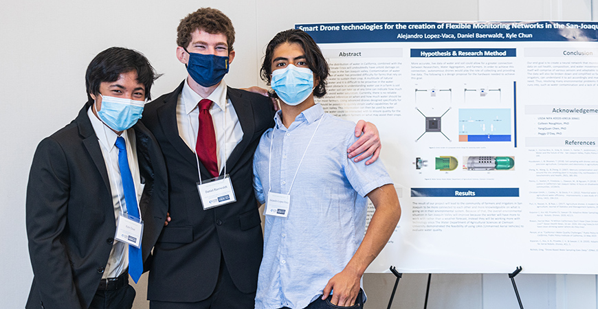
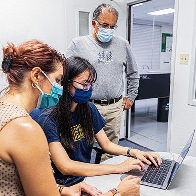
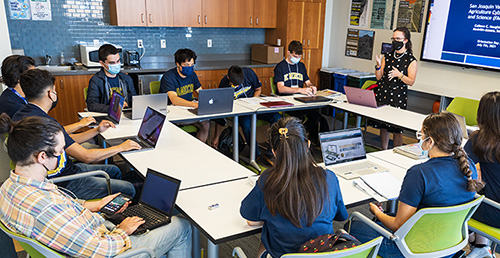

USDA-funded Internship Program Introduced
New Bobcats to Agriculture
Research
September 20, 2021
By Elizabeth Arakelian, UC Merced
Incoming freshman Kyle Chun (mechanical engineering), third-year Daniel Baerwaldt (chemistry) and first-year Alejandro Lopez-Vaca (engineering) in front of their presentation.
Shortly before the fall semester kicked off in person, 11 students were wrapping up their first summer on campus as part of the FACTS summer bridge program.
FACTS stands for San Joaquin Valley Food and Agriculture Cyberinformatics Tools and Science. The six-week summer course, funded by the United States Department of Agriculture’s (USDA) National Institute of Food and Agriculture, introduces students to the world of research in agricultural science and technology.
Through the FACTS bridge program, first-year and transfer students get a head start on research and much more. The internship was led by Professor Colleen Naughton and included visits to local farms and industries, giving students exposure to real-world applications of the region’s agricultural industry.
“The program went very well despite the continued challenges of the COVID-19 pandemic,” Naughton said. “It was great to be back in person for the first time since Spring 2020. I learned a ton alongside the students. The students exceeded my expectations for their research and poster presentations at the symposium. They put in a ton of hard work and woke up early many Fridays and braved the heat to participate in the practical field days.”
Each student had the opportunity to select which professor and areas of focus — ranging from hydrology to nutrition and food security — to work with to begin their academic careers. For instance, incoming mechanical engineering student Kyle Chun worked on drones with faculty mentor Professor YangQuan Chen while second-year sociology student Briana Lopez studied how almonds impact quality of sleep compared to other foods with Professor Rudy Ortiz.

Graduate student Azar Alizadeh, incoming Merced College transfer student Socheata Hour (computer science and engineering) and Professor Reza Ehsani during the FACTS program.
“FACTS made my summer because I was able to meet a wide variety of people, from my fellow interns and guest speakers on our Wednesday workshops to people who gave us tours on our Friday field trips,” said Lauren Hur (computer science and engineering, class of 2024). “Even as someone who had no prior exposure to the field of agriculture, I was able to leave this program with new profound knowledge of ag-tech.”
The internship culminated in August with the students presenting their research posters at a symposium. Chancellor Juan Sánchez Muñoz attended and spoke to the new Bobcats along with the students’ faculty mentors.

Professor Colleen Naughton speaks to the FACTS program students.
The FACTS grant proposal was put together by CITRIS (Center of Information Technology Research in the Interest of Society) in collaboration with faculty from the School of Natural Sciences, School of Engineering, Merced County Public Health Department and UC Agriculture and Natural Resources. The proposal was one of 26 grants selected for funding by the USDA.
The internship program will run for three more years. Those interested in applying for a future internship can keep an eye on the CITRIS website.